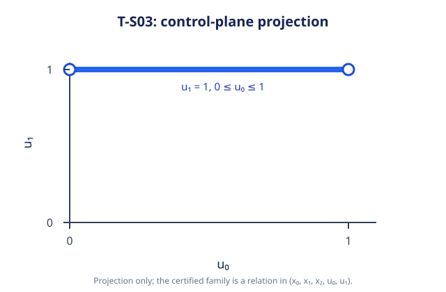

Single-profile exploratory evidence. One excluded warmup and seven saved observations; no comparator or speedup claim.
Solver source 2c0c92107acd1cfc2f7e6d359e030d0bc47fb98e; separately versioned harness f95f1545d2e16fa61d6d506de2cc30d8168e724f. Input SHA-256 a295c1233676141fb6ceb9f793c913d9ed62b88af3f369474cf13f0dd5aafffc.
The terminal cost (x2−1)^2 is nonnegative and reaches zero exactly when x2=u1=1. The complete relation is (x0,x1,x2,u0,u1)=(0,s,1,s,1) with 0≤s≤1. Each timed run checked completed optimal status, registry-verified exact family, objective bounds [0,0], and every coefficient of the canonical H-relation.
0 ≤ u0 ≤ 1; x0=0; x1−u0=0; x2=1; u1=1
The distinct histories (0,0,1,0,1) and (0,1,1,1,1) both have terminal state 1. Each timed run checked both endpoints and two infeasible nonmembers. The control-plane projection is u1=1, 0≤u0≤1; the full result remains five-dimensional.

Reproduction uses the pinned source and harness commands in README; raw observations and the complete input are linked below.
The registered completeness verifier is csl.verifier.ts03-singular-integrator@1, with Assurance::numerical. The Strategy B path invokes the registered production HiGHS convex solver, extracts the optimal level, and the compiled verifier checks the exact full relation. This is one exact fixture, not generic singular-system support.
Fresh problem construction and resolution, registered Strategy B and production HiGHS LP/convex provider creation/selection, StrategyRegistry preparation, exclusive public StrategyPort workspace creation and run, the HiGHS convex solve, optimal-level extraction, compiled T-S03 verifier acceptance, objective bounds [0,0], literal canonical full joint-history H-relation and membership checks including two distinct histories with the same terminal state. Includes local owner destruction before one_run returns. Excludes process startup, JSON serialization, build, file persistence and rendering.
Seven observations, median 1038900 ns; min–max 935500–1088900 ns; range width 153400 ns. Failures: 0. The excluded warmup is retained in JSONL/CSV.
| Repetition | Elapsed (ns) | Objective bounds | Result disposition | Validation |
|---|---|---|---|---|
| 1 | 1088900 | [0,0] | complete_optimal_family | passed |
| 2 | 1053800 | [0,0] | complete_optimal_family | passed |
| 3 | 1038900 | [0,0] | complete_optimal_family | passed |
| 4 | 986900 | [0,0] | complete_optimal_family | passed |
| 5 | 935500 | [0,0] | complete_optimal_family | passed |
| 6 | 998300 | [0,0] | complete_optimal_family | passed |
| 7 | 1058600 | [0,0] | complete_optimal_family | passed |
Performance conclusion: inconclusive. The separate diagnostic workload and process counters do not establish a source-mapped limiter on the unprofiled T-S03 public path. Performance remains inconclusive; no latency limiter is claimed. The separate diagnostic run is retained in profile evidence; its durations are excluded from the seven observations.
Host/compiler/Release settings, exact source and harness identities, dependency hashes, executable hash, clean-source checks, pre/post host load, resources, warm-state policy, commands, and unavailable phase counters are retained below. Absolute host roots are replaced by portable placeholders. The build provenance retains original evidence hashes separately from the hashes of the sanitized published files. The interval includes registry preparation and verification; it is not a native-only solve interval.
Typed JSON · Raw JSONL · Raw CSV · Measurement · Scenario · Environment · Build provenance · Commands · Separate profile · Reproduction notes
This partial SYN-04 evidence keeps #67 open. Deployment and live URL verification are separate main-only gates.